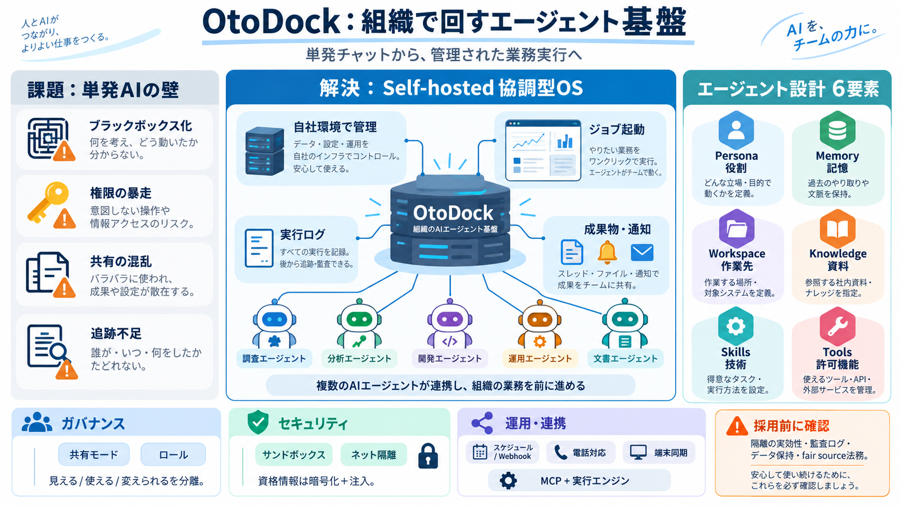

GitHub - OtoDock/oto-dock: Your personal AI agent platform — self-hosted, BYO Claude/Codex subscription · GitHub
A kernel sandbox around every agent. Each session runs in its own mount and process namespace. Folders are mounted autom…

組織で回すエージェント基盤
OtoDockは、自社サーバーで動かし、複数エージェントをチーム単位で運用できる基盤（プラットフォーム）です。チャットだけでなく、スケジュール実行・ファイル作成・委任・通知・電話対応まで扱います。
クラウドを借りるだけでなく、自社環境でツール接続やデータ取り扱いを管理。
MCP（ツール接続）/ Claude Code・Codex（実行エンジン）という前提を押さえる。
単発のAIでは足りない
エージェントを“社員のように”使うには、権限・共有・実行ログ・隔離・監査・運用設計が必要になります。OtoDockはそれを「仕組み」で吸収しようとしています。
ブラックボックス化、ツール許可の暴走、共有の混乱、失敗時の追跡不足。
設計されたエージェントを、ダッシュボードで管理しながら運用する。
エージェントを設計する
OtoDockでは、エージェントを「6要素」に分解して組み合わせます。これにより単なるチャットではなく、業務仕様に沿った再利用・編集がしやすくなります。
役割（指示 / 振る舞い）
永続メモ（記憶）
作業先（実行環境）
参照資料（ナレッジ）
適用技術
許可された機能（制御）
共有と権限を分ける
エージェントは共有モードで段階管理でき、さらにロール設計で「誰が何をできるか」を分離します。チーム導入時の混乱を抑える意図が読み取れます。
個人専用 → 個人＋共有 → 共有＋個人 → 共有のみ（段階的）
Admin / Manager / Creator / Editor / Member / Viewer
変更履歴・閲覧範囲・操作権限を分けやすくし、「見える/使える/変えられる」を明確化する方針。
信用しない前提
エージェントは強力なため、「カーネルサンドボックス＋ネットワーク隔離」で閉じ込める方針が示されています。資格情報は暗号化してセッション単位で注入し、エージェントが直接見えないようにします。
カーネルレベル隔離（方針）
ネットワーク到達を制限
暗号化＋セッション注入
SSO、2FA、ユーザー別コスト予算などを最初から用意。
隔離の“強度”や監査ログの粒度は、提示テキストだけでは確定できません。
実行を可視化する
エージェントは常時監視されなくても、スケジュールやWebhook起点で動作します。実行結果（ファイル・レポート・更新）はダッシュボードに反映され、必要なら通知します。
スケジュール / Webhook（ジョブ起動）
ファイル作成、レポート生成、更新
実行ログ・ツール呼び出し・作成ファイルを可視化する方向性。
途中から継続できる構造を示唆（読み取り）。
会話だけじゃない
電話応対や、端末（macOS/Linux/Windows）へ同期された“リモートマシン”としての運用も含め、業務実行範囲を広げる構想が書かれています。
Twilio / Asterisk / FreePBX 連携（記載）
端末側と同期し、ツールやファイルへアクセス（satellite構想）
“文章生成”から“オペレーション実行”へ寄せる点が、導入価値の差になり得ます。
理解のための前提
OtoDock理解の鍵は、ツール接続方式（MCP）と実行エンジン（Claude Code / Codex）を区別することです。エージェントごとの実行エンジン選択も可能という趣旨が示されています。
MCP（ツール接続の方式）
Claude Code / Codex
エージェント/チャット単位（趣旨）
「Tools（許可されたものだけ）」という制御がデフォルト前提。
MCPツールの“具体的な制限方法”は設定と運用で決まる可能性。
何が“プラットフォーム”なのか
OtoDockは「統合基盤」として、ダッシュボード管理・ジョブ起動・権限設計・隔離・外部連携をまとめて扱います。単発のチャットボットと、運用設計の作りが異なります。
6要素で設計、共有モード＆ロール、ログ可視化、隔離、通知/スケジュール。
設計・共有・監査・隔離が“別途”になりがちで、運用に手間が残る。
現場の業務フロー（実行・成果物・通知）まで通すか。
ツール許可の範囲が広がるほど攻撃面が増える点を運用で抑える。
採用前の追加調査
提示テキストだけでは、脆弱性対応履歴、監査ログの粒度、隔離の具体強度、データ保持ポリシー等が確認できません。導入判断では“原文ドキュメント”の精査が必要です。
隔離強度、ネットワーク制限の検証方法、権限昇格リスク評価。
通知粒度、失敗時リトライ、ログ保存期間、バックアップ/リストア。
fair sourceの競合制限・Apache 2.0未来付与の解釈（事業に依存）。
既知の脆弱性対応履歴、第三者監査の有無（入力からは不明）。
自由度と制限の両面
ライセンスは「fair source（FSL-1.1、Apache 2.0未来付与）」で、無制限に開放するのではなく競合的な商用利用を制限する形になっています。自社のビジネス形態に合わせた法務確認が推奨されます。
FSL-1.1 / Apache 2.0 相当への未来付与（一定期間後）
「競合」の線引きが、利用形態・市場により難しくなる可能性。
ライセンスは技術より先に、事業戦略に影響し得ます。
結論（採用判断）
OtoDockは「自社でエージェントを回す」ための土台が強い可能性があります。6要素設計・共有/ロール・サンドボックス/隔離・運用可視化は魅力ですが、導入前に隔離の実効性、監査ログ、データ保持、法務（fair source）を必ず追加確認してください。
A kernel sandbox around every agent. Each session runs in its own mount and process namespace. Folders are mounted autom…
`docker info` `Client: Docker Engine - Community Version: 29.2.1 Context: default Debug Mode: false Plugins: buildx: Doc…
### Tool Integration Automatic Discovery: Langdock discovers tools and resources from the MCP server during setup. Yo…
Availability: Beta Model Context Protocol (MCP) is an open protocol that standardizes how AI applications access extern…
What it is: MCP is an open protocol that allows AI clients (like agents) to call real-world services securely and pred…